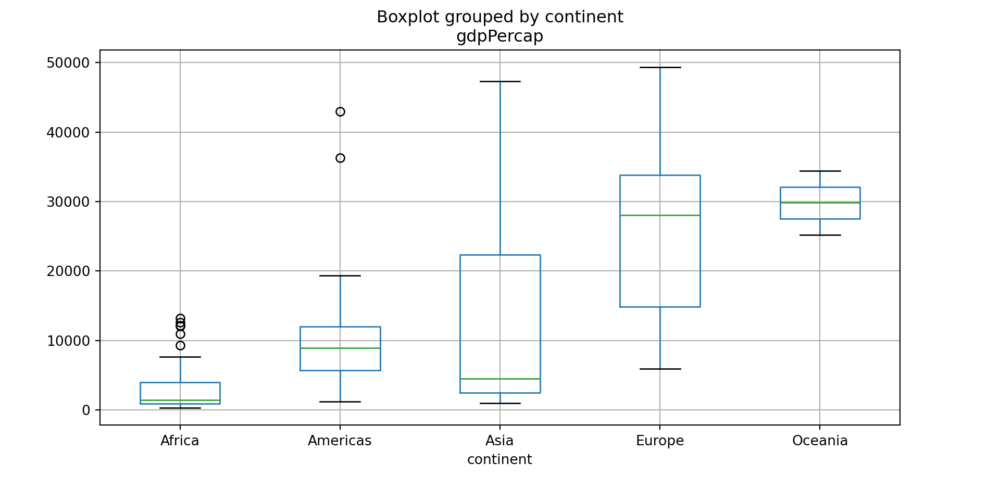

Using virtual environment 'myenv' ...Exploring data with Python
2025-04-08
Rick Gilmore
Prelude
Ward (2019)
Overview
Announcements
- Final project presentation survey due today.
Vonnegut on the shapes of stories
Comberg (2010)
Tentative presentation schedule
Last time…
import matplotlib.pyplot as plt
rand_x = np.random.normal(0, 1, 100)
rand_y = np.random.normal(0, 1, 100)
data = {'x': rand_x, 'y': rand_y}
df = pd.DataFrame(data)
df.plot(x = 'x', y = 'y', kind = 'scatter')
plt.show()
Today
- Exploring data with Python
- Work session
- DataCamp
- Final projects
Exploring data with Python
Remember Hans Rosling?
Rosling (n.d.)
Dollar Street

Gapminder data
- Full dataset
- Excerpt as R data package (Bryan, Kim, & MacDonald, 2017) on CRAN
- Excerpt as Python package on PyPi
Loading
Peeking
1gapminder.head()- 1
-
Examine the first few rows of this
pandasdata frame.
country continent year lifeExp pop gdpPercap
0 Afghanistan Asia 1952 28.801 8425333 779.445314
1 Afghanistan Asia 1957 30.332 9240934 820.853030
2 Afghanistan Asia 1962 31.997 10267083 853.100710
3 Afghanistan Asia 1967 34.020 11537966 836.197138
4 Afghanistan Asia 1972 36.088 13079460 739.981106Important
Python has special functions that work with specific types of data elements like a pandas data frame. These functions are called ‘methods.’ So, gapminder.head() tells Python to apply the head method to the data frame.
I use R more than Python, so this syntax sometimes confuses me. In fact, this won’t work:

Data types
country object
continent object
year int64
lifeExp float64
pop int64
gdpPercap float64
dtype: objectDescribe
<bound method NDFrame.describe of country continent year lifeExp pop gdpPercap
0 Afghanistan Asia 1952 28.801 8425333 779.445314
1 Afghanistan Asia 1957 30.332 9240934 820.853030
2 Afghanistan Asia 1962 31.997 10267083 853.100710
3 Afghanistan Asia 1967 34.020 11537966 836.197138
4 Afghanistan Asia 1972 36.088 13079460 739.981106
... ... ... ... ... ... ...
1699 Zimbabwe Africa 1987 62.351 9216418 706.157306
1700 Zimbabwe Africa 1992 60.377 10704340 693.420786
1701 Zimbabwe Africa 1997 46.809 11404948 792.449960
1702 Zimbabwe Africa 2002 39.989 11926563 672.038623
1703 Zimbabwe Africa 2007 43.487 12311143 469.709298
[1704 rows x 6 columns]>Exploring country
0 Afghanistan
1 Afghanistan
2 Afghanistan
3 Afghanistan
4 Afghanistan
...
1699 Zimbabwe
1700 Zimbabwe
1701 Zimbabwe
1702 Zimbabwe
1703 Zimbabwe
Name: country, Length: 1704, dtype: objectExploring continent
0 Asia
1 Asia
2 Asia
3 Asia
4 Asia
...
1699 Africa
1700 Africa
1701 Africa
1702 Africa
1703 Africa
Name: continent, Length: 1704, dtype: objectExploring year
0 1952
1 1957
2 1962
3 1967
4 1972
...
1699 1987
1700 1992
1701 1997
1702 2002
1703 2007
Name: year, Length: 1704, dtype: int64Exploring lifeExp
0 28.801
1 30.332
2 31.997
3 34.020
4 36.088
...
1699 62.351
1700 60.377
1701 46.809
1702 39.989
1703 43.487
Name: lifeExp, Length: 1704, dtype: float64Exploring pop
0 8425333
1 9240934
2 10267083
3 11537966
4 13079460
...
1699 9216418
1700 10704340
1701 11404948
1702 11926563
1703 12311143
Name: pop, Length: 1704, dtype: int64Exploring gdpPercap
0 779.445314
1 820.853030
2 853.100710
3 836.197138
4 739.981106
...
1699 706.157306
1700 693.420786
1701 792.449960
1702 672.038623
1703 469.709298
Name: gdpPercap, Length: 1704, dtype: float64Unique values
array(['Asia', 'Europe', 'Africa', 'Americas', 'Oceania'], dtype=object)- “chaining” methods one after the other like this using the dot (
.) notation is analogous to using the pipe (`|>’) command in R.
Selecting rows
1gapminder[gapminder["continent"].isin(["Asia"])]- 1
-
The square brackets “[]” mean ‘look inside’
gapminder. Select the “continent” column, but only the rows that include “Asia”.
country continent year lifeExp pop gdpPercap
0 Afghanistan Asia 1952 28.801 8425333 779.445314
1 Afghanistan Asia 1957 30.332 9240934 820.853030
2 Afghanistan Asia 1962 31.997 10267083 853.100710
3 Afghanistan Asia 1967 34.020 11537966 836.197138
4 Afghanistan Asia 1972 36.088 13079460 739.981106
... ... ... ... ... ... ...
1675 Yemen, Rep. Asia 1987 52.922 11219340 1971.741538
1676 Yemen, Rep. Asia 1992 55.599 13367997 1879.496673
1677 Yemen, Rep. Asia 1997 58.020 15826497 2117.484526
1678 Yemen, Rep. Asia 2002 60.308 18701257 2234.820827
1679 Yemen, Rep. Asia 2007 62.698 22211743 2280.769906
[396 rows x 6 columns]What do we want to know about?
- life expectancy by country or continent
- life expectancy over time
- wealth by country or continent, over time
- life expectancy by wealth
Life expectancy by continent
- Choose year(s)
- Select data
- Plot
Life expectancy by continent - 1 & 2
- Pick rows from
gapminderwhere “year” == 2007 - Assign it to a new variable called
gap2007
Life expectancy by continent - 3
Life expectancy by continent - 3b
array([[<Axes: title={'center': 'Africa'}>,
<Axes: title={'center': 'Americas'}>],
[<Axes: title={'center': 'Asia'}>,
<Axes: title={'center': 'Europe'}>],
[<Axes: title={'center': 'Oceania'}>, <Axes: >]], dtype=object)
Life expectancy over time
- Pick a country or continent
- Select data
- Create a plot
Life expectancy over time – 1 & 2
<bound method NDFrame.head of country continent year lifeExp pop gdpPercap
24 Algeria Africa 1952 43.077 9279525 2449.008185
25 Algeria Africa 1957 45.685 10270856 3013.976023
26 Algeria Africa 1962 48.303 11000948 2550.816880
27 Algeria Africa 1967 51.407 12760499 3246.991771
28 Algeria Africa 1972 54.518 14760787 4182.663766
... ... ... ... ... ... ...
1699 Zimbabwe Africa 1987 62.351 9216418 706.157306
1700 Zimbabwe Africa 1992 60.377 10704340 693.420786
1701 Zimbabwe Africa 1997 46.809 11404948 792.449960
1702 Zimbabwe Africa 2002 39.989 11926563 672.038623
1703 Zimbabwe Africa 2007 43.487 12311143 469.709298
[624 rows x 6 columns]>Life expectancy over time – 3
Life expectancy over time – 3b

Wealth by continent
Wealth over time (Africa)
Life expectancy by wealth (Africa)

Exploring data
- Plot a simple figure
- Figure sparks one or more questions
- New figure or table answers the question(s) and sparks others
- Rinse and repeat
Work session
Resources
References
Bryan, J. (jenny)., Kim, A. Y., & MacDonald, A. (2017). Jennybc/gapminder: v0.3.0. computer software, Zenodo. https://doi.org/10.5281/ZENODO.1039839
Comberg, D. (2010). Kurt Vonnegut on the shapes of stories. Youtube. Retrieved from https://www.youtube.com/watch?v=oP3c1h8v2ZQ&t=83s
Rosling, H. (n.d.). Hans rosling’s 200 countries, 200 years, 4 minutes - the joy of stats - BBC. Retrieved from https://www.youtube.com/watch?v=jbkSRLYSojo&t=80s
Ward, T. (2019). Africa (piano acoustic cover) - Toto, Tyler Ward & Lisa Cimorelli. Youtube. Retrieved from https://www.youtube.com/watch?v=8IYSGJ77OVY